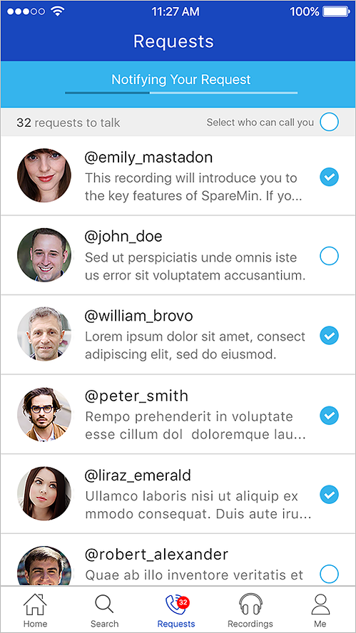
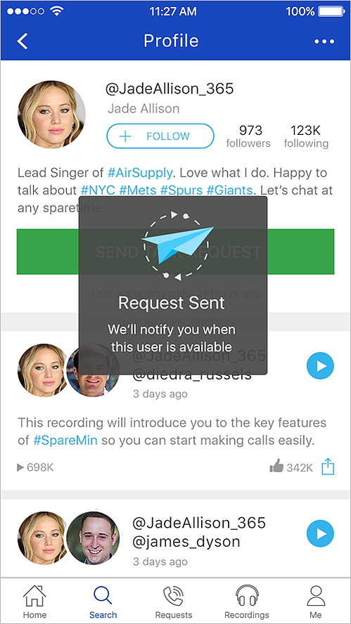
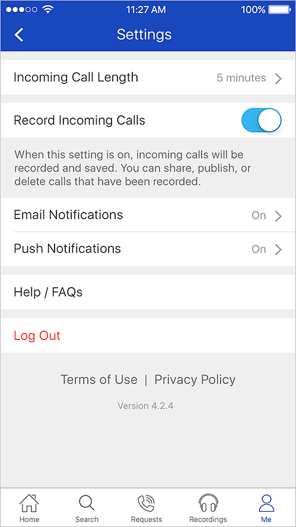

SpareMin — Social Messaging Mobile App
Social communication app — chat, voice call, share & more. Cross-platform release on iOS and Android in 2016.
Overview
Social messaging app including chat, voice call, sharing and more. Worked closely with the development team and SpareMin CEO on UI/UX, visual design, and product management. Commercial launch in 2016, USA.







Previous
← Iris ID
Next
Dairy Queen →